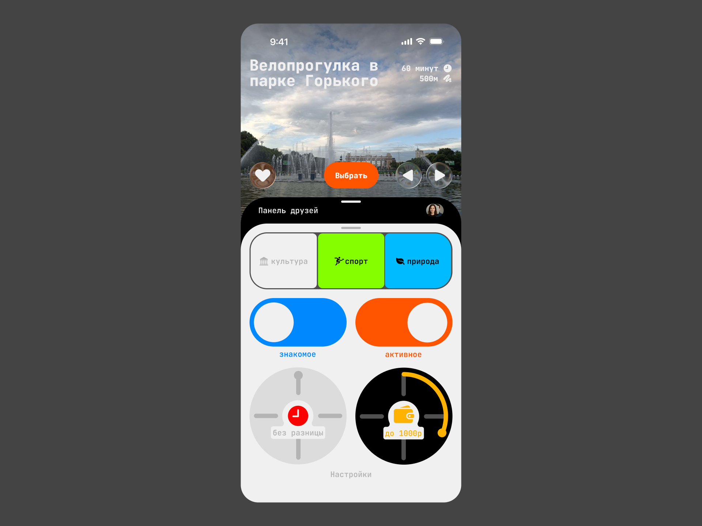
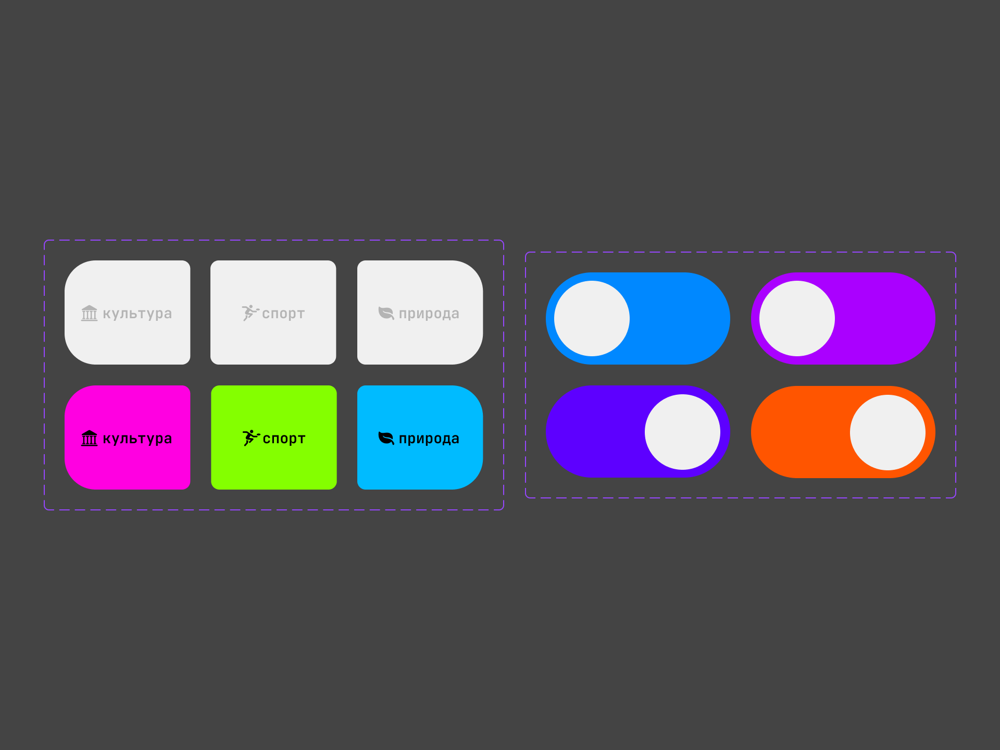
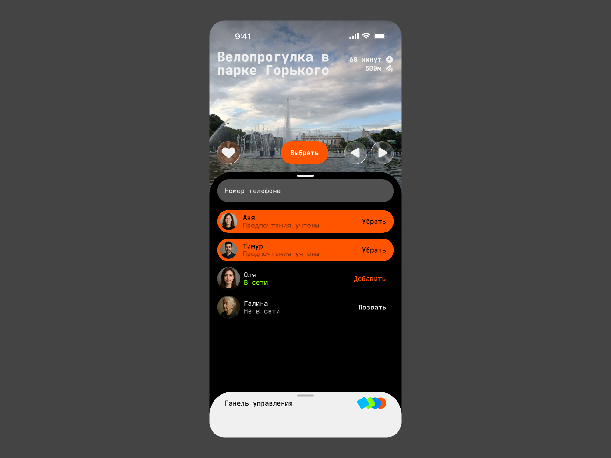
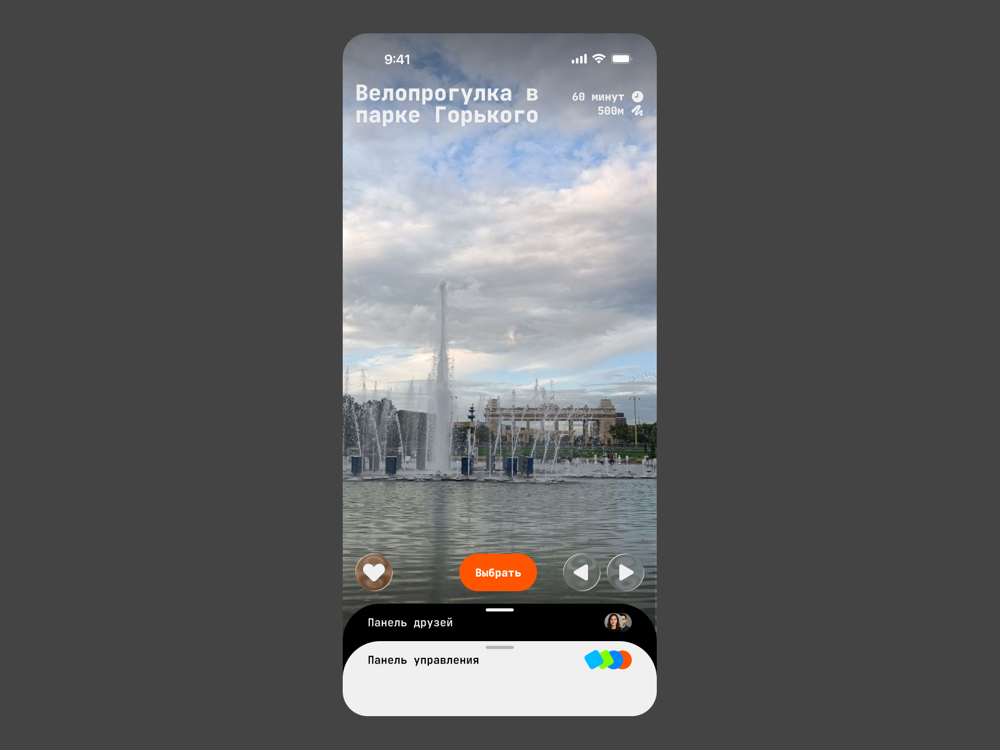
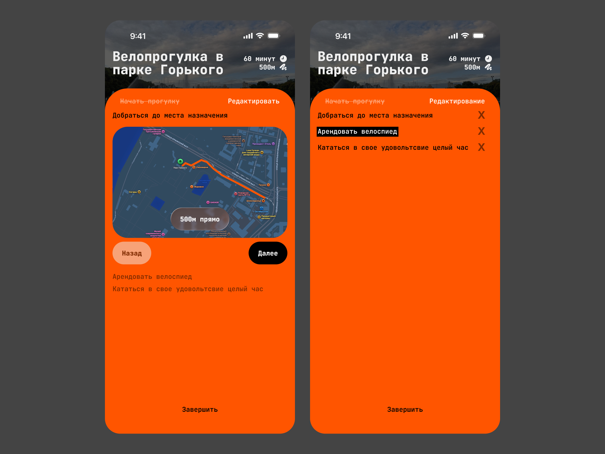

Разработка мерча для
дизайн-команды Т-Банка
Экспресс-работа, выполненная для конкурса для уже закрытой платформы Простор от VK
Задание
Необходимо разработать приложение, которое переосмысляет поиск мест досуга

Идея
Идея приходит сразу. Что если рассматривать поиск мест для досуга не как умный поиск с рекомендациями, а как сборку плейлиста с любимыми песнями, где умные рекомендации подсказывают место?
Чтобы эффективно воспользоваться рекомендациями, нужный эффективные настройки. Я разделил их по типу включения: кнопки, тумблеры с четким и понятным переключением, а также колесики для выбора определенного диапозона

Друзья
В приложение также зашит командный формат досуга: вы можете выбрать друга по номеру телефона и учесть его предпочтения и рекомендации

Полноэкранный режим
Понятные формы кнопок и цвета делают настройки удобными и в полноэкранном режиме

Текущий досуг
В маршрут уже включены целевые действия, в которых приложение подсказывает, что нужно сделать для их выполнения. Например, чтобы добраться до Парка Горького, приложение открывает карту. Сам список можно регулировать. Действия особенно полезны в командном режиме, ведь друзья могут находиться в разных точках

Ссылка на фигмуСделано за 3 дня в сентябре 2025